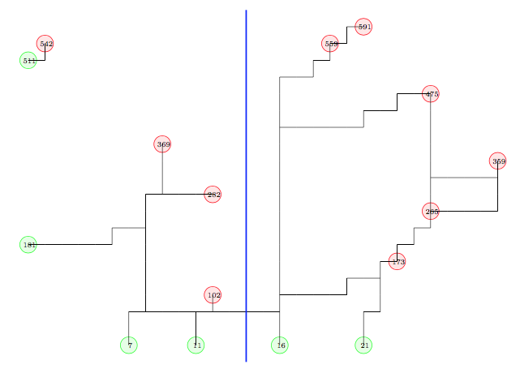

Case Study:
Post Disaster Debris Removal
Integer Programming Formulations
Students may work in groups of up to three people. You may consult your textbooks, your notes, online information, the TA, and me. You may not solicit help from other sources.
Due: Friday, December 8. (30 points)
The solution found in Part 1 has fractional values for some of the variables. In this part, we investigate methods to try to tighten up the formulation.
If you prefer to use them, my model and run file are available on the course website. The solution to the LP relaxation has value 166.04. If your model returns a different value, you need to either modify your model so it does give this value, or use my model. The output obtained by my model is available online.
My model has four sets of variables which are binary in the IP formulation and between 0 and 1 in the LP relaxation:
Questions

In the solution to the LP relaxation, only two origins from 16,...,30 are open. In any such solution, at least one arc crossing from the left of the blue line to the right must be open. Express this as a valid linear constraint which is satisfied by any feasible solution to the integer program. Does your constraint improve the value of the LP relaxation? (Hint: If three origins are open to the right of the blue line then only one is open to the left, and this origin must supply destinations {102, 282, 369, 542}. You can use this observation to help construct a valid constraint.)
| John Mitchell |
| Amos Eaton 325 |
| x6915. |
| mitchj at rpi dot edu |
| Office hours: Tuesdays 12-2pm, Wednesdays 11am–1pm. |